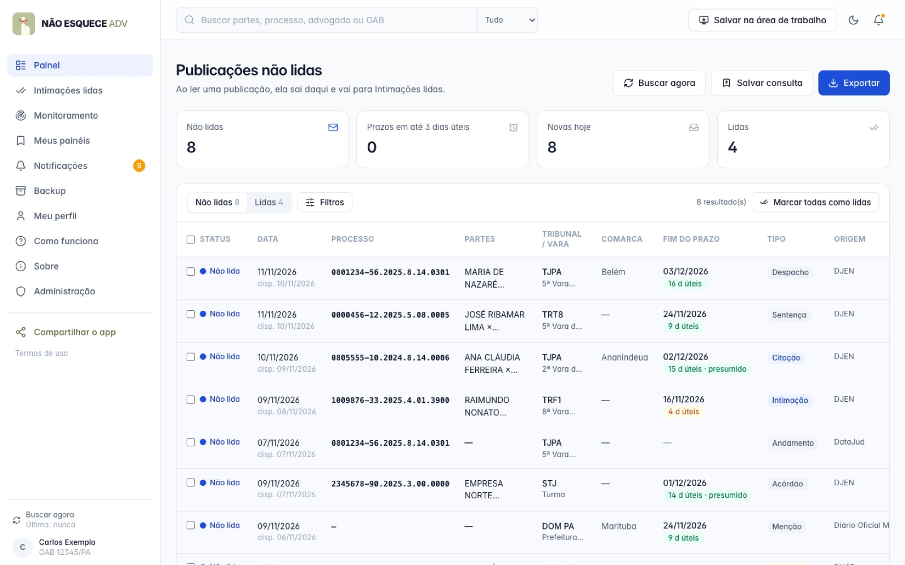
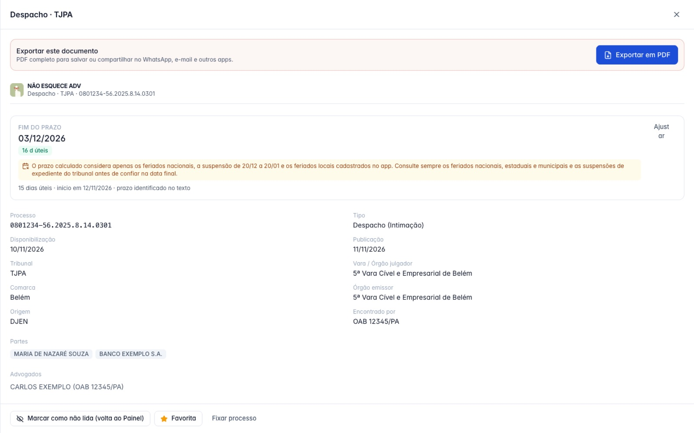
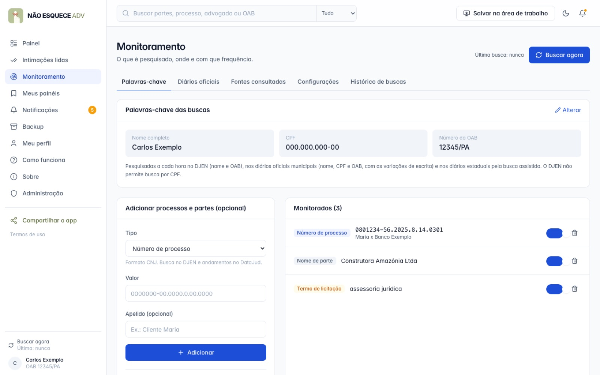
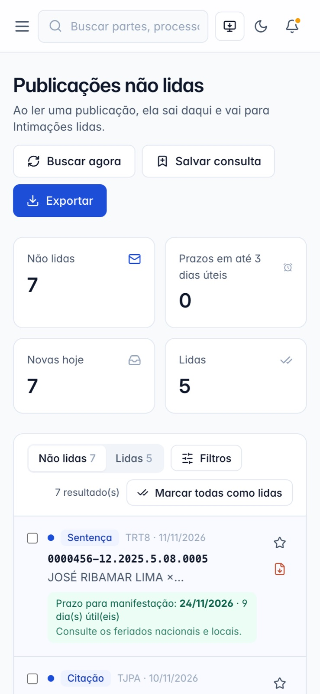

Aplicativo web
Não Esquece Adv
Nenhuma intimação passa despercebida.
SituaçãoDisponível
Versão0.4.5
PlataformasNavegador (computador e celular), instalável como app
PreçoGratuito
O que faz
Recursos principais
- Monitora a cada hora intimações, citações e publicações pelo nome completo, CPF e OAB.
- Fontes: DJEN e DataJud (CNJ), diários municipais, licitações (PNCP) e busca assistida nos diários estaduais e da União.
- Painel único com o que ainda não foi lido; ao ler, a publicação vai para Intimações lidas.
- Prazo calculado em dias úteis, com recesso e feriados, e sinalização de prazo presumido.
- Exportação em PDF, Excel e CSV; backup com senha. Dados guardados no próprio navegador.
TelasPainel de publicações não lidas · toque para ampliar Publicação aberta com prazo e inteiro teor · toque para ampliar Palavras-chave: nome, CPF e OAB · toque para ampliar No celular · toque para ampliar
Como é o Não Esquece Adv








Imagens com dados fictícios.
Manual
Como instalar e começar
- Abra o aplicativo no navegador (ou clique em Ver demonstração para conhecer com dados fictícios).
- Aceite os termos e informe nome completo, CPF e OAB/UF.
- Use Salvar na área de trabalho para instalar como app no computador ou no celular.
- Faça backup mensal: os dados ficam só no navegador daquele aparelho.
Prazos
Publicação no 1º dia útil após a disponibilização (Lei 11.419/2006, art. 4º); confira feriados locais.
Backup
Criar, exportar e importar, inclusive com senha.
Importante: O gerenciamento de intimações e prazos é de responsabilidade do usuário.
Dúvidas na primeira abertura? Veja as orientações gerais.